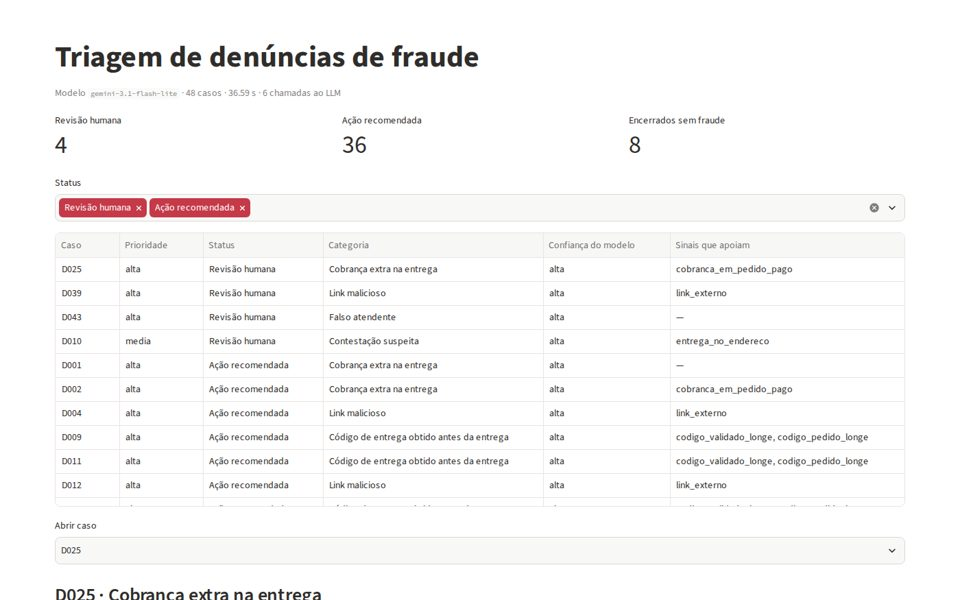

Mais recente
Triagem de denúncias de fraude em delivery
Agente que lê a denúncia, o chat do pedido e o GPS da entrega, identifica o golpe e monta a fila de trabalho do analista. Os golpes cobertos são cobrança extra na maquininha, código de entrega pedido antes da chegada, falso atendente, link malicioso e contestação falsa.
- 48 de 48 casos corretos e 17 de 17 num conjunto feito para quebrar o sistema, contra 35 de 48 só com regras.
- Toda citação do modelo é conferida no texto. Injeções de prompt sempre vão para revisão humana.
- Estorno e suspensão só acontecem com aprovação, e nenhum cliente é acusado por mensagem automática.
Gemini · JSON Schema · Python · Streamlit · 68 testes